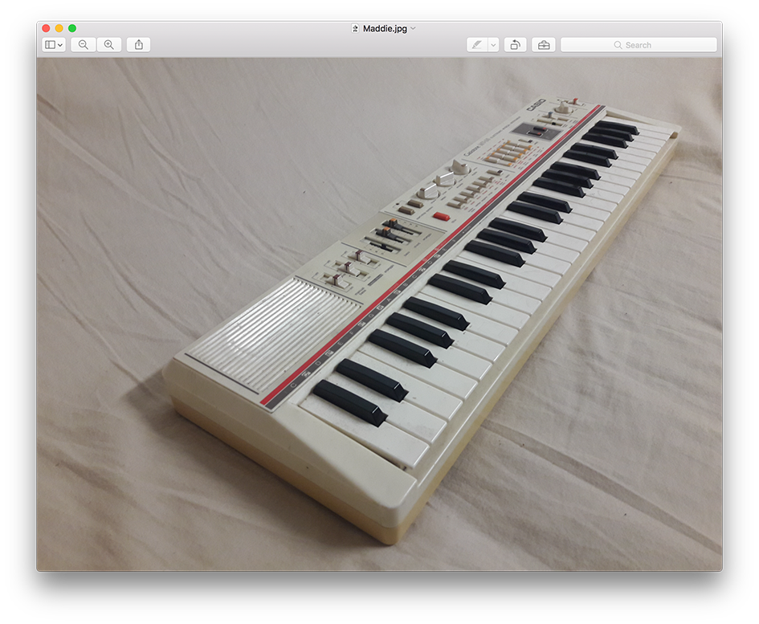

Maddie and David's task was to bring a found object.
Maddie
David
I found a Casio keyboard. I was walking down the street, and somebody must have just thrown it out.

Really!
Yeah, a little micro synth. I just picked it up, and I thought: I bet you it doesn’t go. But I took it home, took the back of it, and looked at it. The batteries were all rusted and leaking, but I took them out and cleaned it up. I had a nine-volt plug and just plugged it in. Switched it on. And the light came on! [gasping].
I pressed a key, and it went: diing – and it continued: di-du-du-di-do, this real build up, spacy-astro-ish sound 🎹. OH MY GOD ğŸ˜
As it warmed up?
No, that was the sound that it was set to. 🼠Di-du-du-di-du-du-do.
And then.. I just got into my house with this amazing synth, and then suddenly; serious rain! 🌧 So, if I hadn’t got it, it would have been destroyed.
Wow, that’s pretty sweet. That’s a good find!
Yeah right. And I saw them online; they cost 300 dollars – because they were made in the 80’s. Those first kinds of portable synthesisers.
So what do you think is the story behind that? Someone just cracked it when the batteries didn’t work?
Yeah, I think - because the batteries had destroyed the contacts inside, so it probably just got left in somebody’s house like that. And then they didn’t have a plug, so they never tried to see if it worked.
Are you sure they didn’t think: I’ll just put this here while just doing something else quick? ğŸ˜
I did! I did kind of think that for a little bit. But it was outside a church on our street, where people just dump all their shit, because there used to be a second-hand store there. There is not anymore, but people still dump stuff there. And there is even a sign: Please don’t leave anything here.
But people throw out some ridiculous things. Like my found object; one of my good mates and I were walking along, and a woman comes out of a house with two golf bags. And she is a little: arrh, annoyed, you know... And he is like: Excuse me, is this what I think it is? She’s like: Yeah, take them, I don’t care. All flustered. I think they were about to go through a divorce...
She just put them on the street like hard rubbish. And they were a quite good set of golf clubs.

That is cool. Properly worth hundreds of dollars?
Yeah, they were. Expensive!
But I asked if he was going to come back and want them.. She just said: "Take them! I don’t want to see any of his stuff!"
And we just left with these two golf bags.
That’s nuts. It is crazy when stuff like that happens. On the inside you’re thinking; what an idiot throwing this away, but on the outside, you’re like; ohh, yeah this is just trash… let me just dispose of that for you.
Yeah, she just wanted them out, haha.
And then when he came home: [making high-pitched voice] "JANICE!! Where are my golf clubs????" ğŸ˜
Haha: "Outside with the rest of your things!"
Haha, yeah; "On the footpath!"
"Why are the locks changed?"
"ASK YOUR SECRETARY!"
Haha. Far out. But honestly, I love when there is hard rubbish. That’s my dream. You have to go to a rich suburb though; then you can get some amazing stuff! People don’t even understand.
Yeah, I used to work for a council around Toorak, mowing lawns, and I used to find so many barbecues. Really, really, really good barbecues. Kitchens basically, that people just threw out. Just update it and buy another one. I saw people who would drive around in white trucks and just pick up all the stuff.
You could start a Gumtree business from, literally, picking up rich peoples trash ğŸ˜
I suppose it’s like recycling. Repurposing. Like the keyboard, someone thought, this is just a shitty old keyboard, but then to you’re like: Hang on a minute!
Yeah, I clearly remember when I saw it, and was like 😲 and thought: Is that what I think it is? I didn’t want to build up expectation, maybe it’d be broken, but I picked it up, and it was perfect.